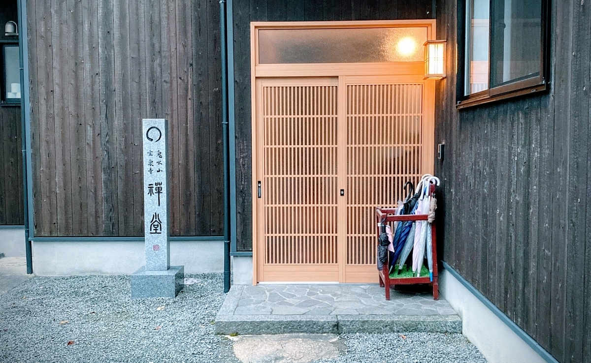

2ヶ月ほど前に、ふと思い立って京都の宝泉寺禅センターの禅体験に参加して、そのことを知人に聴かれるたびに都度話しているのだけど、記録としてはどこにも書いてなかったなと思って、なんとなくブログに書いてみることにした。
宝泉寺禅センターがどんな禅体験を提供しているかは、公式ページや各種メディアやブログに既に多く出ているので、自分はあえて2ヶ月経った今の変化に着目した感想を書いてみようと思う。
前提として、自分は元々とてもマインドフルネスに傾倒していた。複数の書籍を元に数年かけて少しずつ知識を蓄えていて、特に考案者のジョン・カバット・ジン先生の書籍を読んで、日本人として一度は本格的に禅体験をしたいなと思うようになった。
それからというもの、宿泊こそなかったものの、ちょっとした禅体験に参加したり、普段から瞑想したりして、今回たまたま時期が合ったので宿泊体験をするに至った。マインドフルネスと禅では、だいぶ考え方が違う部分はあるけれど、やはりジョン・カバット・ジン先生が禅の実体験を元に考案したというだけあって、これがルーツなのだというのは改めて肌で感じた。
体験から2ヶ月後、一番変わったのは食生活。もともと朝はコンビニのおにぎりを買って済ましてしただけだったのを、毎日ご飯を炊いてお味噌汁を作るようになった。（といっても面倒くさがりだし一人分なので、お鍋では作らず、具を切って入れてレンチン。）
実家は田舎で基本和食だったので、実家を出るまでは朝はお味噌汁だったのだけれど、大学生になってからほとんど作ることはなかったし、たまに作ろうと思っても続かなかった。それが、宝泉寺の朝ごはんがとても美味しかったことが忘れられなくて、最初はレトルトのを買っていただけのものが、今ではちゃんと作るようになって続いているのがすごい。我ながら感動。
それ以外に変わったことといえば、いわゆる「ジャッジしない」という部分が以前よりよくコントロールできるようになった気がする。
「ジャッジしない」というのは多分マインドフルネス的な言い方で、自分は禅的には何というのか知らないのだけど、あるものをあるがままに見るということが、できていたようでできていなかったことに気付かされた。やっぱり、頭では理解していても実際には身体レベルに定着していなかったんだなと、数日間集中的に瞑想を繰り返して感じたし、そういうことに気付けたというだけでも、3日間集中的に宿泊体験した意味はあったと思う。
もう一つ、禅に関係ない部分で言えば、自分も案外、集団行動はできるんだという気づきがあった。
（本筋から少し脱線するけれど、感染症対策について少し補足しておくと、自分が体験に行ったのはオリンピックの開会式のちょっと前くらいだったけれど、受け入れ人数の制限や感染症対策はしっかりされていて、一定の安心感はあった。そもそも自分自身の県境を超えた移動はどうだろうという躊躇は当然あったけれど、どうしてもあのタイミングでしか時間をあけることができなかったし、自分にとって非常に重要度が高いイベントであったので、その分だけ自分の健康管理や移動時の感染症対策は十分配慮したつもり。客観的にどうだったかはわからない。）
集団行動、本当に久しぶりの経験で、学生時代以来じゃないかと思った。正直自分が禅体験をする上で一番心配していた部分だったのが集団行動だったので、それが普通に楽しかったというのは、2ヶ月経った今だけじゃなく、今後の大きな自信になったと思う。
今思えば、そもそも学生時代は吹奏楽部だったので集団行動には慣れていたはずで、それが今になって発揮されたのだと思うけれど、社会人になって集団行動とは程遠い生活を続けていて、リモートワークの増加でそれに拍車がかかったので、もうホントその感覚はとうに忘れていた。それをいまこのコロナ禍で思い出せたというだけでもありがたいし、それが安心して体感できたのは、宝泉寺の熟慮された感染症対策にあったと思う。
自分自身、昔のとあるトラウマで買い物や人混みが苦手な時期が長かったのだけれど、元々数年かけてほぼ克服していたことに加え、今回の宝泉寺の集団行動体験により、2ヶ月経った今は本当に違う次元で不安感がなくなった。
ただ、感染症対策とは違う意味で、移動が本当に苦手な人にはきっとハードルが高すぎる体験種別だと思うので、こうした密度の濃い禅体験がわざわざ京都に出向かなくてもできるようになると良いなと思った。そういう意味で自分は長らく書籍やオンラインの情報源だけでマインドフルネスを学んでいたのだけど、こうしたハードルの高い体験に参加できるようになったことは、自分にとって大きな意味があったように思う。
こうした自分自身を変える機会になる体験型施設というのは、とても効果が大きいと思うのだけど、参加のハードルは高い。体験種別はなんでも良いと思うのだけど、そのハードルを超えるだけでも、中身が何であれ、人間的には一皮剥けるのかもしれない。
……さて、あえて文章にすると以上のような感じ。
とはいえ実際印象に残っているのは、やっぱり美味しかったご飯とか、心地よかったセミの鳴き声とか風の心地よさや、住職さん常住さんたちや参加者の皆さんの人情味。それは多分キャンプとかでも体験できる感想だと思ったので多くは書かなかったけど、でもそういうクオリア的な印象の中に思い出すきっかけがたくさんあって、ふと似たシチュエーションになると丸ごと思い出すという点は、こういう宿泊型体験の良さではないかなと思った。実際一度体験してから禅の本を読むと理解度が随分違う印象だし、百聞は一見に如かずというのは本当だと思う。
ところで今度もしまた、宝泉寺に限らず宿泊型禅体験に再度行くとしたら、今のようなコロナ禍ではないときに行きたいなと思う。
ただ、感染症対策というのはコロナ以前から必要だったのだろうという気はするし、何事も超理想的なシチュエーションはまずありえないのだから、次行く時もきっと何らかの不遇はあるのだろうな。とはいえそうした不遇で過度に不安に思わずに、優先度に応じて適切な対応をしつつ楽しめたら嬉しいなと思う。